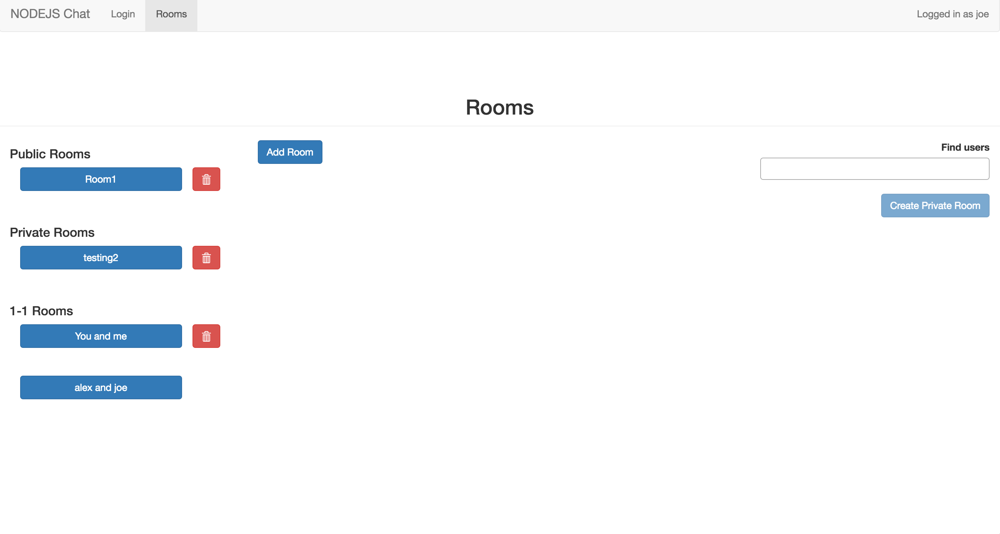
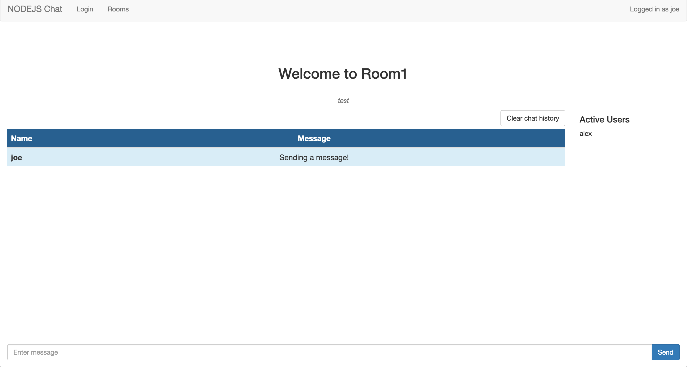

In Progress.
In this group project, we created an application that would allow users create groups, enroll people in those groups, and keep track of members in the groups. The main twist of this project was that it had the feature of face recognition. You enrolled someone in your selected group by uploading a picture of them (along with some other basic information). Now the app can recognize a new picture of that person.
The primary function of this app is for educational purposes. The group owner can see all the people in his group, refresh his/her memory by seeing a picture of them, and can leave notes on that person.
A secondary function of this app would include attendance tracking. At the beginning of a semester, the instructor could pass around some type of tablet and have each student take a picture of themselves and upload it to the app. Then, each day, the instructor could pass around his tablet and have each student take a picture of themselves. If they were recognized, their "time last seen" would be updated to the current time.
Click here to see our demo video.
In this project, I was exploring the use of the JavaScript library, Node. Node is great for creating very fast, responsive web applications. One of the most common things to do in experimenting with Node is to create some sort of chat room. That is exactly what I did - I created a chat service. This service allows users to create public, private, and 1-1 chat rooms where they can chat with other friends or users of the application. A cool feature is that you can very quickly see when other users of the room are typing a message. Also, you can see what users are active in a given room.
 
In this project, I created an application that would
crawl
through wikipedia. The purpose of this crawling was to create a
graph
representation of the wiki pages. The application starts by
receiving a seed url (extention from the wikipedia base url). From
there, it begins crawling the seed url page, until the number of links
collected have reached some pre-determined limit. After receiving all
of these links (represented as vertices on the graph), the application
then began constructing edges between the vertices. The following is
the output graph when calling new WikiCrawler("/wiki/Computer_Science", 1000, "WikiCS.txt"),
where "/wiki/Computer_Science" is the seed url, 1000 is the total number of
new vertices to fetch, and "WikiCS.txt" is the output file.
Each line is a vertex pair. That means that the item on the left side
of the column is connected to the item on the right side of the column.
Here is the output file: